Здесь представлены проекты по проектированию клиентских сценариев в профиле. Все они направлены на увеличение конверсии в успешное прохождение сценариев и улучшение пользовательского опыта при прохождении, обогащение профиля данными клиента
Длительность
1 год
Команда
Product Designer, Product owner, Frontend Developers (x2), Backend Developer, Business Analyst, QA (x2), System Analyst
Моя роль
Продуктовый дизайнер. Вела проекты от анализа задачи до релиза: бенчмарк, сценарии, макеты, спецификации, дизайн-ревью
Пользователи
Более 100 млн аккаунтов (абоненты МТС и других операторов)
Дизайн-система
Была
Платформа
Web Desktop, Web Mobile
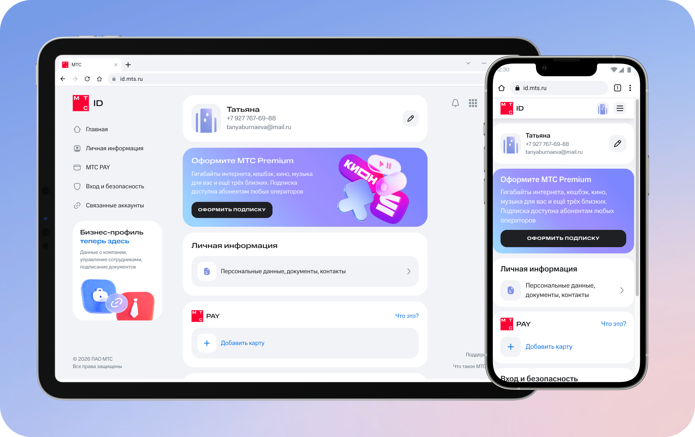
id.mts.ru
Проект 1Резервные контакты: как поднять заполняемость резервных контактов с 2%
Контекст
На текущий момент заполняемость резервных контактов составляет 2% от общего числа пользователей
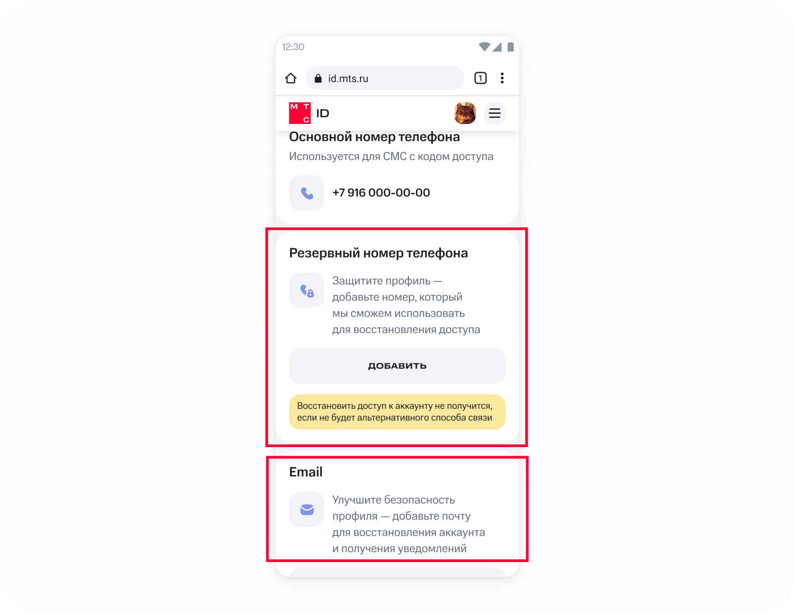
Резервные контакты
В чём проблема?
Резервные контакты являются основным способом восстановления доступа к аккаунту, в случае невозможности войти в аккаунт привычным способом (сменил номер, потерял симку, не помню пароль). Пользователь не смог войти в аккаунт МТС ID, а значит и в МТС Банк, сервисы КИОН, основное приложение Мой МТС и другие сервисы
Из-за отсутствия резервных контактов наблюдаем рост инцидентов в поддержку по восстановлению доступа
Боли бизнеса
Рост обращений в поддержку по восстановлению доступа
Кроме того, компания планировала блокировать неактивные аккаунты, чтобы сэкономить на их мониторинге. Восстановить такой аккаунт можно будет только через резервный контакт. Без контактов блокировка ударила бы по пользователям
Боль пользователя
Пользователь теряет доступ к аккаунту, через который входит в банк, КИОН и другие сервисы МТС
Задача
Разработать механику принудительного заполнения резервных контактов для пользователя
Ожидаемые результаты
Снижение количества инцидентов, связанных с восстановлением доступов
Обогащение данными Профиля
Ограничения
Мы должны учитывать контекст пользователя, а именно то, что он просто так по собственному желанию практически не заходит в профиль. Он это делает либо по ссылке из СМС, которую сервис отправил для прохождения конкретного целевого сценария, либо переходит из других сервисов МТС, которыми пользуется постоянно, опять же для какой-то конкретной цели (изменить настройки, например)
Этапы работы
1.Анализ текущих данных, бенчмарк рынка по аналогичным сервисам и функциям
2.Проектирование возможных вариантов механик, обсуждение с командой
3.Выбор итоговых вариантов механик
4.Проектирование клиентских путей по заполнению резервных контактов в разных точках входа
5.Разбили скоуп работ на три итерации для релиза, подготовили спецификации
Посмотрели, откуда пользователи приходят в профиль и какие сценарии проходят. Подтвердили: 88 % заходов — целевые, по внешней ссылке
Бенчмарк
Посмотрели, как похожие сервисы (Google ID, Яндекс ID, Сбер ID и другие) собирают резервные контакты и где напоминают о них. Выявили общие и наиболее распространённые паттерны, а также уникальные механики. Ранжировали выявленные механики по возможности использования в нашем сервисе, учитывая ограничения и контекст сервиса
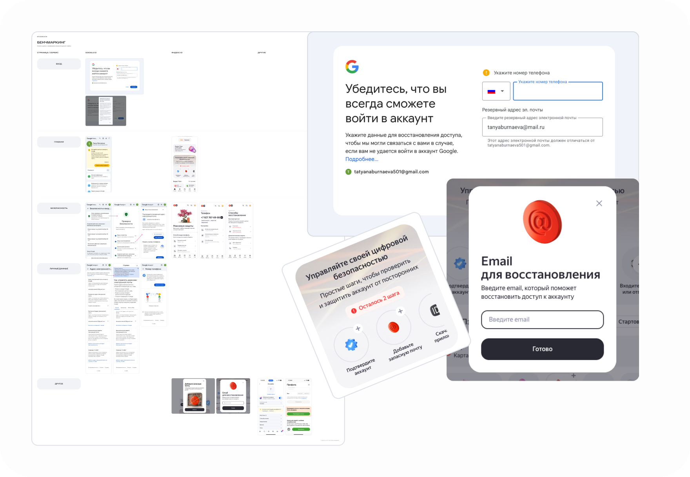
Разбор альтернатив с командой
Провели брейншторм с командой по обсуждению собранных данных. Сравнили пять+ механик по двум критериям: увидит ли пользователь напоминание и помешает ли оно основному сценарию. А также исходя из параметров усилия/эффект
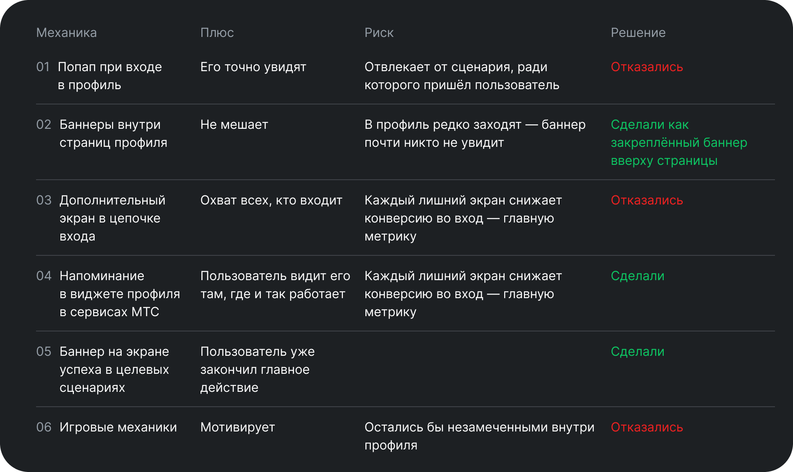
Варианты механик и гипотезы. Что рассматривали и почему отказались
Всплывающий попап при входе в сервис
Есть нюанс с тем, что в профиль пользователь редко заходит целенаправленно, а скорее попадает из других точек входа (по ссылке из СМС), чтобы пройти конкретный сценарий. Есть опасение, что такая механика будет отвлекать от прохождения основного более важного для нас сценария
Баннеры внутри страниц профиля
В этом варианте был риск, что пользователь не увидит баннеры и прирост данных будет крайне мал, так как «просто так» в профиль пользователи заходят редко. Обычно пользователь приходит пройти конкретный сценарий, точку входа в который получил где-то вне профиля
Баннеры в целевых сценариях
Показывать баннер с призывом заполнить контакты на финальных экранах целевых сценариев. Здесь вероятность заполнения выше, так как эти сценарии обязательны для прохождения и баннер мы показываем в конце цепочки, а значит не будем отвлекать от основного действия. Частично эта механика реализована
Экраны на цепочке входа
Увеличить периодичность показа экранов с добавлением резервных контактов на цепочке входа. Этот вариант имеет свои риски, поскольку каждый последующий шаг на цепочке снижает конверсию (есть процент пользователей, который отваливается на каждом последующем экране). Чем меньше экранов во входе в сервис, тем выше конверсия. Нам здесь важнее, чтобы пользователи заходили в сервис. Поэтому этот вариант был отклонён
Уведомления
Добавить уведомление в виджет UMS. Как вариант, оставили к обсуждению и возможной реализации
Игровые механики
Могут смотивировать пользователя и повысить метрику возвращаемости. НО, не в первой итерации. В данном варианте будут высокие затраты на разработку решения при сомнительном эффекте. Держим в голове ключевой контекст в том, что пользователи не приходят в профиль по своей воле просто так. Поэтому любая механика, реализованная где-то внутри страниц профиля просто могла остаться незамеченной в принципе
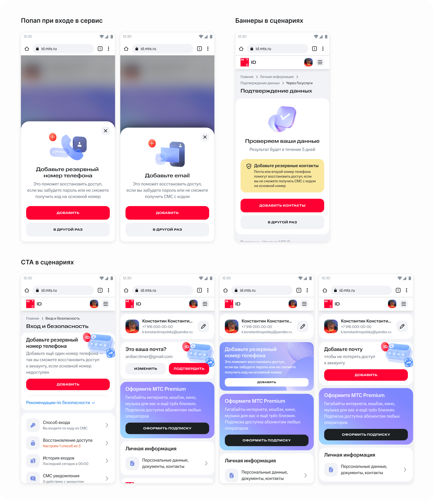
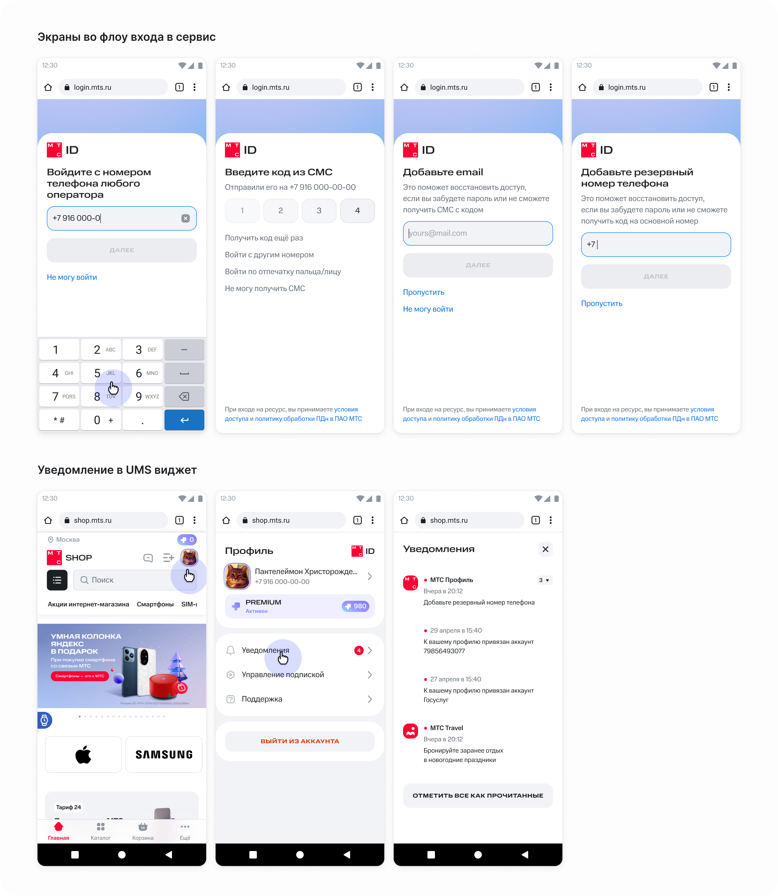
Выбранные механики
Добавили стики баннеры в профиле
Жёлтые (предупреждающие) стики баннеры всегда прибиты к верхней части страницы. Значит, пользователь на какой бы странице не оказался, всегда видит этот баннер перед глазами. Цвет баннера привлекает внимание пользователя, и визуально отличается от других элементов. Проработали правила очерёдности показа разных типов баннеров, их совместимость с другими предупреждающими баннерами.
Гипотеза: Если закрепить предупреждающий баннер вверху любой страницы профиля, его заметят все, кто зашёл в профиль. В том числе, на тех страницах профиля, которые открываются в вебвью в других сервисах. Проверим по конверсии баннера.
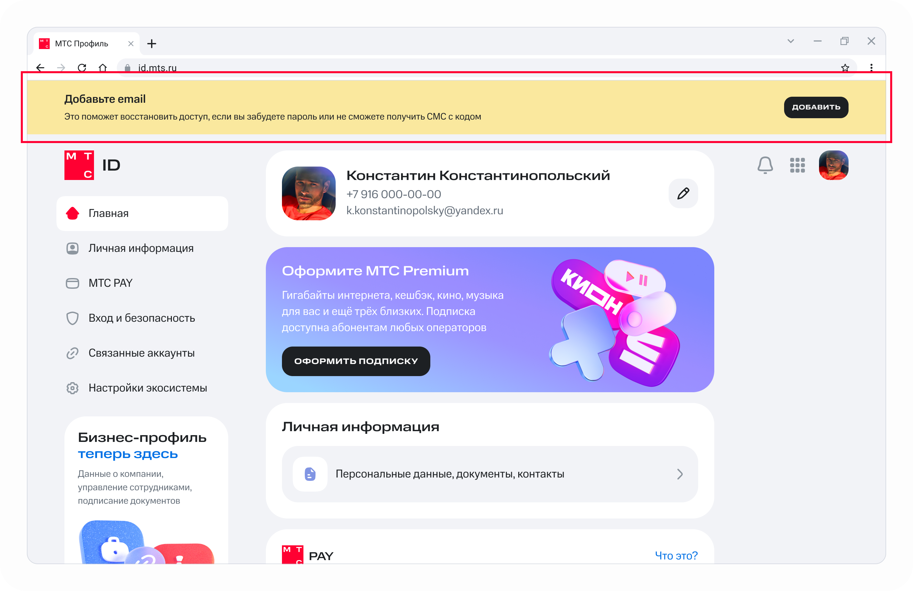
Sticky banners — Web Desktop
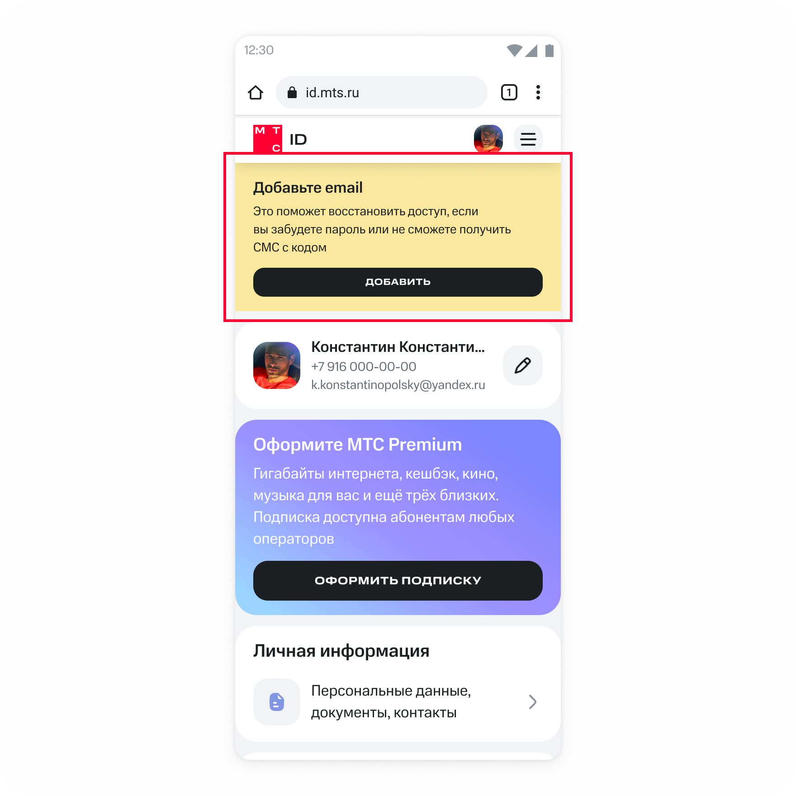
Sticky banners — Web Mobile
Добавили баннеры в виджете профиля
Виджет — это экосистемный модуль, который подключён в сервисах экосистемы МТС, что даёт высокую проходимость пользователей. Соответственно, необязательно заставлять клиента переходить в профиль — он видит уведомление о заполнении резервных контактов в том сервисе, которым пользуется сам. И там же может пройти сценарий заполнения.
Гипотеза: Если напоминать о контактах в виджете, который встроен в сервисы МТС, его увидит больше людей, чем внутри профиля. В подтверждении этой гипотезы у нас есть цифры MAU профиля (1,5 К) и DAU виджетов сервисов (от 400 до 800 К). Проверим по числу добавленных контактов из виджета.
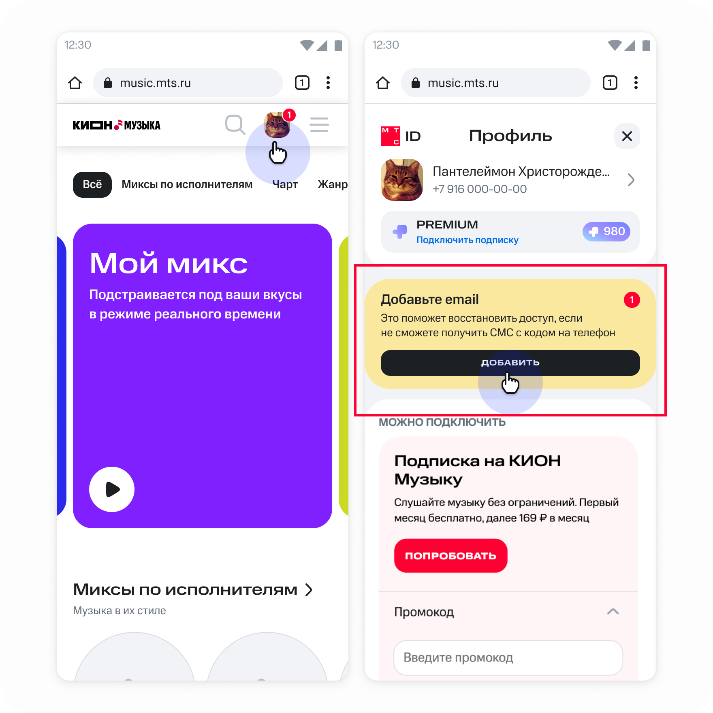
Баннер в виджете — Web Mobile
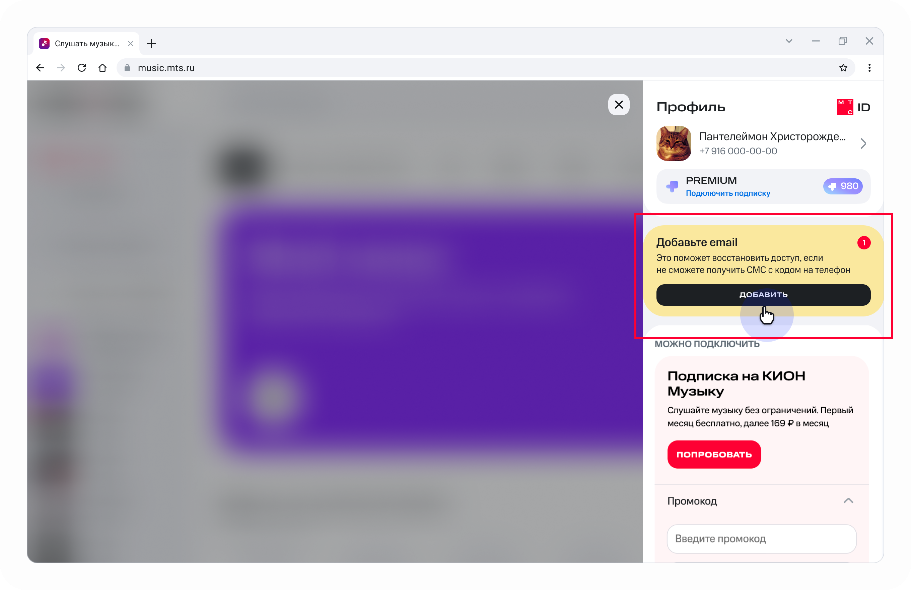
Баннер в виджете — Web Desktop
Проработала все сценарии по добавлению контактов. Написала спецификацию по типам баннеров, приоритетности вывода баннеров в случае пересечения с другими кейсами, спроектированы клиентские пути с возможными ошибками и т.д. Проект проработан для Web Desktop, Web Mobile для светлой и тёмной темы
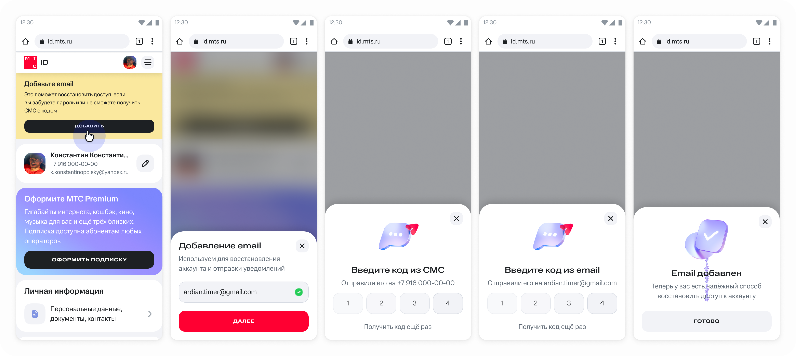
Пример userflow по добавлению резервного контакта — Светлая тема
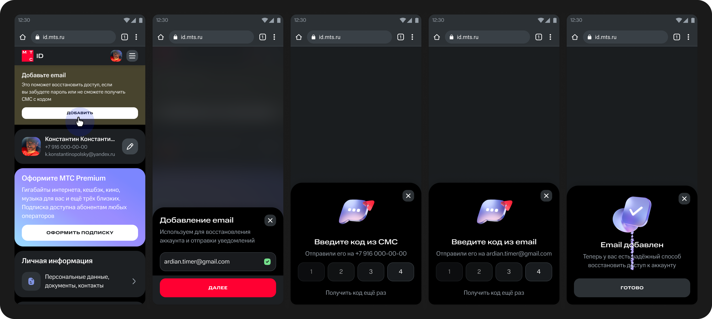
Пример userflow по добавлению резервного контакта — Тёмная тема
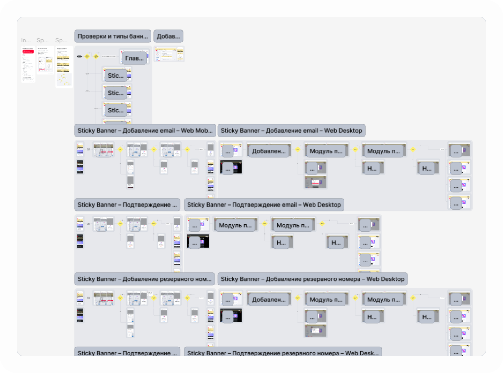
Пример макетов в Фигма
Добавили баннеры в сценарии
Добавили баннеры в отдельные ключевые сценарии на последних шагах (экранах успеха) с призывом заполнить дополнительные контакты. Баннеры добавлены только в те сценарии, где есть взаимосвязь с резервными контактами (например, установление способа входа по 2fa). Так, чтобы сохранить логическую связь между этими клиентскими путями.
Гипотеза: Если предлагать добавить контакт в конце связанного сценария — например, после настройки двухфакторной аутентификации, — пользователь согласится чаще: он уже думает о безопасности. Проверим по конверсии баннера на экране успеха.
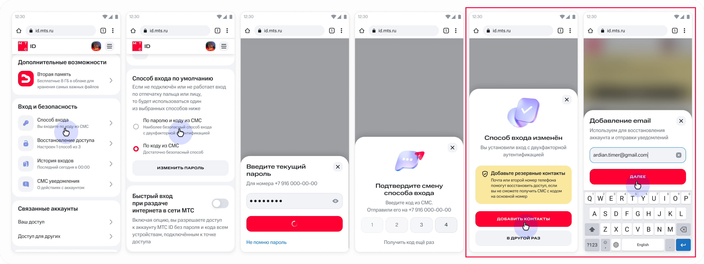
Пример одного из сценариев
Анимация финального экрана
Для финального экрана проработала микроанимацию. Так как экрану успеха предшествовал длинный путь по выполнению задачи, хотелось закончить сценарий на дружелюбной ноте с помощью текстов и микроанимации для позитивного подкрепления и лояльности пользователя к интерфейсу
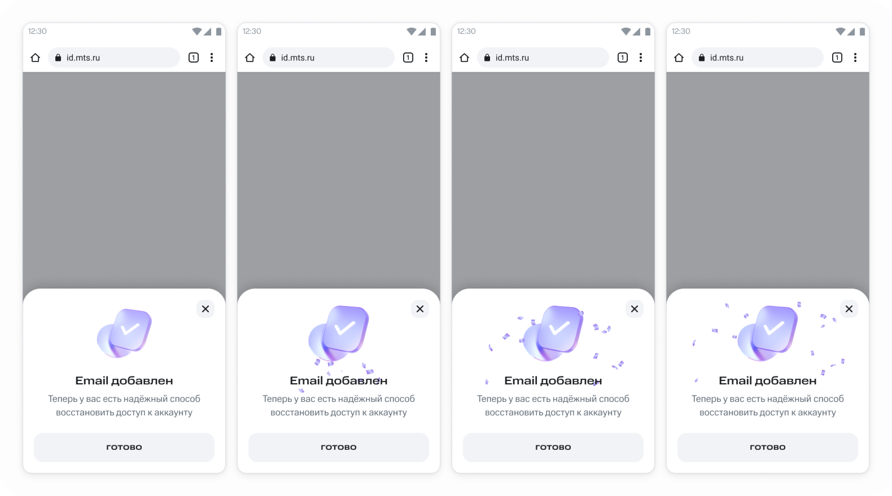
Результаты
После выкатки механик наблюдаем позитивную динамику прироста по добавлению резервных контактов. Продолжаем следить за динамикой